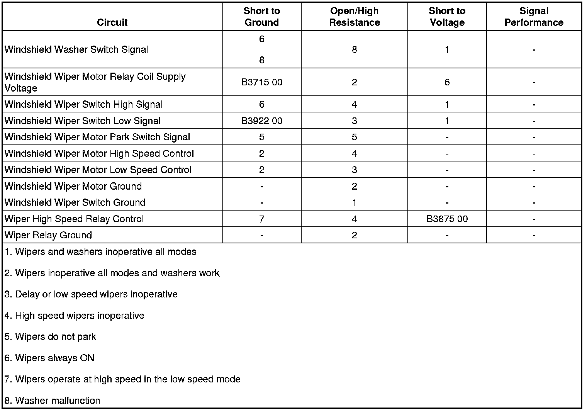

B3875
DTC B3875
Diagnostic Instructions
* Perform the Diagnostic System Check - Vehicle (Initial Inspection and Diagnostic Overview) prior to using this diagnostic procedure.
* Review Strategy Based Diagnosis (Initial Inspection and Diagnostic Overview) for an overview of the diagnostic approach.
* Diagnostic Procedure Instructions (Initial Inspection and Diagnostic Overview)provides an overview of each diagnostic category.
DTC Descriptor
DTC B3875 00
- Wiper High Speed Relay Circuit
Diagnostic Fault Information

Circuit/System Description
The body control module (BCM) monitors the wiper high speed relay control circuit only when wiper high speed mode is active. When the wiper high speed mode is requested, the BCM responds by applying a ground through the wiper high speed relay control circuit to the coil side of the relay, energizing the WPR HI relay.
Conditions for Running the DTC
This DTC can set only when the output is actively being requested by the BCM.
Conditions for Setting the DTC
This DTC sets if the BCM detects a short to battery voltage on the wiper high speed relay control circuit.
Action Taken When the DTC Sets
The BCM will not activate the output.
Conditions for Clearing the DTC
* The current DTC will become history when the request for the output is removed or when the condition for setting the fault is corrected.
* The history DTC will clear after 50 consecutive ignition cycles without a fault present.
Reference Information
Schematic Reference
Wiper/Washer Schematics ([1][2]Electrical Diagrams)
Connector End View Reference
Component Connector End Views (Connector Views)
Description and Operation
Wiper/Washer System Description and Operation (Wiper/Washer System Description and Operation)
Electrical Information Reference
* Circuit Testing (Component Tests and General Diagnostics)
* Connector Repairs (Component Tests and General Diagnostics)
* Testing for Intermittent Conditions and Poor Connections (Component Tests and General Diagnostics)
* Wiring Repairs (Component Tests and General Diagnostics)
Scan Tool Reference
Control Module References (Programming and Relearning)for Scan Tool Information
Circuit/System Testing
1. Ignition OFF, disconnect the C2 harness connector at the underhood fuse block.
2. Connect a test lamp between the control circuit terminal 11 and battery voltage.
3. Command the wiper high speed relay ON and OFF with a scan tool. The test lamp should turn ON and OFF when changing between the commanded states.
• If the test lamp is always ON, test the control circuit for a short to ground. If the circuit tests normal, test or replace the BCM.
• If the test lamp is always OFF, test the control circuit for a short to voltage or an open/high resistance. If the circuit tests normal, test or replace the BCM.
4. If all circuits test normal, test or replace the relay.
Repair Instructions
Perform the Diagnostic Repair Verification (Verification Tests) after completing the diagnostic procedure.
* Relay Replacement (Attached to Wire Harness) (Relay Replacement (Attached to Wire Harness))Relay Replacement (Within an Electrical Center) (Relay Replacement (Within an Electrical Center))
* Control Module References (Programming and Relearning)for BCM replacement, setup, and programming